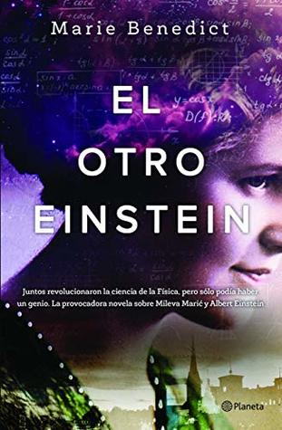

El otro Einstein (Spanish Edition)
Reseña por Jorge I. Zuluaga

Ver reseña en GoodReads (necesita cuenta)
Después de ver esa serie, me propuse que, en todos los espacios académicos o de divulgación en los que hablara de los trabajos de Albert Einstein, siempre daría el crédito a Mileva por su participación en la concepción intelectual de la teoría de la relatividad y muchas de las otras grandes ideas publicadas por el científico suizo en su annus mirabilis (1905).
No fue una decisión fácil: la evidencia que soporta esta hipótesis no es irrefutable.
Pero tampoco lo es la que soporta la muy popular hipótesis contraria, es decir, aquella que afirma que Einstein concibió todas esas ideas geniales que vieron la luz en 1905 en el "vacío", mientras compartía su casa con la mejor estudiante de matemáticas y física de su clase y sin que esta cruzara prácticamente con él una palabra sobre su trabajo o hiciera contribuciones originales al mismo (¡es ridículo!).
Frente a la imposibilidad de resolver el problema, me decanté por usar el principio de la afeitadora de Ockham: la mejor explicación es la que supone menos cosas: Mileva fue coautora de los artículos del annus mirabilis, pero su nombre nunca se incluyó en los mismos.
A pesar de mi decisión, sabía que me enfrentaría a la crítica de colegas, estudiantes y amigos por tomar una posición tan definida (y tal vez una posición oportunista) frente a una situación histórica no resuelta y muy controversial.
Lo que nunca imaginé fue que tuviera la increíble suerte de ver escrita una buena novela sobre la extraordinaria y, al mismo tiempo, inquietante historia de Mileva y de su vida al lado del hombre-mito que todavía es Einstein. Mejor aún, que esta historia "confirmara" la intuición (o el convencimiento) que muchos tenemos ahora de la contribución no reconocida de la primera esposa del que posiblemente es el científico más famoso de la historia.
¡Y qué novela!
Por supuesto, se trata de una obra de ficción. Usarla para "confirmar" la validez de una hipótesis es absurdo: la autora parte de suponer la validez de la hipótesis para construir la historia.
Pero hay una cosa diferente en "El otro Einstein".
Marie Benedict, la autora, resume en esta obra una extensa investigación sobre el caso de Mileva que ni yo, ni los que podrían llegar a criticar mi postura (que no es mía, sino la de muchos expertos en el mundo), hemos realizado.
Al leer la novela se da uno cuenta (ella no lo declara explícitamente) de que Benedict leyó las cartas de Mileva, se aproximó a la cultura y la lengua serbia (que cita permanentemente en el libro), visitó los lugares (sus descripciones son muy detalladas) y, en general, se documentó ampliamente usando los argumentos que de parte y parte se han tejido en ambos lados de este debate por décadas.
Sí, es una obra de ficción. Pero una obra basada en una extensa evidencia.
No, no es la última palabra. Pero sí un excelente medio (la literatura) para que todos nos aproximemos de manera más humana al posible drama (admitiendo todavía, y solo por decencia intelectual, que podría no haber ocurrido así) que se desarrolló en los años en los que Mileva y Einstein (o Johnnie y Dollie, como se llamaban amorosamente) estuvieron juntos.
El resultado es una historia apasionante y, en los momentos climácicos, profundamente dolorosa (les confieso que estuve al borde de las lágrimas en más de una oportunidad; el drama, por ejemplo, de Lieserl, la primera hija de la pareja, es insoportablemente doloroso). La historia de cómo una mujer bajita, eslava, no muy agraciada y con una deformidad congénita, víctima, por la misma razón, del bullying de sus supuestos iguales (¡ella los superaba a todos realmente!), pero con un talento innato reconocido para la física y las matemáticas, cuando al fin estaba cerca de conseguir superar todas las trabas que podía tener una mujer inteligente y distinta de su tiempo, se enamoró del que quizás fue el hombre equivocado.
Los personajes recreados por Benedict (todos reales) resultan entrañables: Helena (su gran amiga), su adorable papá (¡lo amé toda la novela! ¡qué papá!), incluso los amigos de la academia Olympia, hombres que nunca gozarían de la imperecedera fama de Albert Einstein, pero que reconocieron en su momento las capacidades sobresalientes de Mileva: Marcel Grossman y Michel Besso.
La novela está tan bien escrita que te enamoras de Albert Einstein y lo odias más o menos durante el mismo número de páginas, tan solo para obligarte después a recordar que es una obra de ficción y que no, tampoco Marie Benedict conoció al científico (¡pero es como si lo hubiera hecho! ¡qué maravilla!).
La historia pudo ser así y, si lo fue, ¡qué terribles cosas las que tuvo que sufrir Mileva!
Pero también pudo ser distinta, es decir, peor.
Cualquiera sea la verdad, como científico no dejaré de lamentar el talento que pudo desperdiciarse de esta y muchas otras grandes mujeres que vivieron en ese tiempo.
No dejo de pensar en lo que podría haber salido de la cabeza de Mileva (aparte de algunas de las ideas que publicó Einstein solo con su nombre en 1905), si el azar le hubiera permitido desarrollar completamente su potencial, incluso al lado de Einstein.
¿Habrían compartido acaso el premio Nobel del 21? ¿Cuántas niñas se habrían inspirado con su historia como lo hicieron y lo siguen haciendo con las de Maria Sklodowska-Curie? ¿Habrían llegado los Einstein, trabajando en conjunto como Ein stein (una roca), a resolver más rápido el problema de la gravedad, sumando dos poderosas intuiciones con las habilidades matemáticas reconocidas de Mileva? ¿Qué más habrían logrado juntos? ¿Cuántos años se habría ahorrado la física teórica si esta pareja, o incluso solo ella, hubiera podido pensar los acuciantes problemas de la década de los 20? ¿Habría Mileva abrazado la extraña teoría cuántica como se negó a hacerlo Albert hasta su muerte? ¿Podríamos tal vez estar hablando del principio de exclusión o incertidumbre de Marić o la ecuación de Marić para describir la evolución de la función de onda cuántica?
Como sea, ¡team Mileva hasta la muerte! (ya me estoy mandando a hacer mis camisetas).